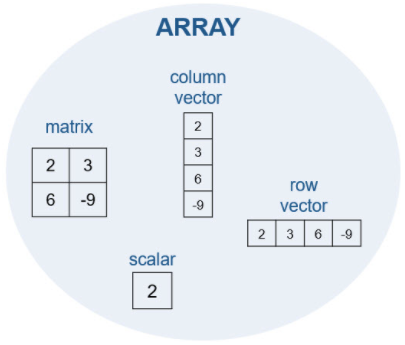

一、课程概述
二、命令
2.1 输入命令
（1）执行运算时，如果不专门指定变量，MATLAB 会自动新建一个名为 ans 的变量用来存储计算结果。
（2）MATLAB 中的等号 (=) 是赋值运算符，MATLAB 会首先计算等号右侧的表达式，再赋给左侧的变量。
（3）工作区窗口中显示的是当前位于工作区中的所有变量。
（4）当输入命令而没有以分号结尾时，MATLAB 将会在命令提示符下显示结果；如果在命令的末尾添加以分号结尾，将抑制输出显示，但仍会执行该命令。
（5）在命令行窗口为活动窗口的前提下，按键盘上的向上箭头键可以重新调用以前的命令。
（6）MATLAB 不会在命令行窗口中自动重新运行以前的命令，所以以前的变量的值会保持不变。
2.2 命名变量
（1）MATLAB 变量命名规则
- 仅包含字母、数字和下划线
- 以字母开头
- 区分大小写
2.3 保存和加载变量
（1）用 save 命令可以将工作区中的变量保存到 MATLAB 特定格式文件（.mat）中。
举例：将工作区中所有变量保存到名为 datafile.mat 的文件中
save datafile
举例：仅将1个变量 m 保存到名为 justm.mat 的新 MAT 文件中
save justm m
（2）使用 load 命令可以从 MAT 文件中加载变量
举例：从文件 datafile.mat 中加载所有变量
load datafile
举例：从文件 myData.mat 中仅加载1个变量 m
load myData m
（3）通过输入变量的名称，可以查看工作区中列出的任何变量的内容
举例：显示变量 data 的内容
data
（4）当要在 MATLAB 中切换处理新问题时，可以使用 clear 函数从工作区中删除所有变量。
举例：将工作区清空
clear
（5）clear 函数清理工作区，clc 命令清理命令行窗口。
举例：使用 clc 命令清空命令行窗口。
clc
2.4 使用内置的函数和常量
（1）MATLAB 包含一些内置的常量，例如用 pi 表示 π。
举例：创建一个名为 x 的变量，其值为 π/2
x = pi/2
（2）MATLAB 包含许多内置的函数，例如 abs（计算绝对值）和 eig（计算特征值）。MATLAB 使用圆括号来传递函数输入，与标准的数学表示法类似。
举例：使用 sin 函数计算 x 的正弦值，并将结果赋给一个名为 y 的变量。
y = sin(x)
举例：使用 sqrt 函数计算 -9 的平方根。将结果赋给一个名为 z 的变量。
z = sqrt(-9)
注意：解包含虚数 i，这是 MATLAB 中的内置常量。
（3）在命令行窗口和工作区窗口中仅显示前四个小数位，但它在内部是用更高的精度表示的，可以使用 format 函数控制显示的精度。
举例：提高命令行窗口变量显示的精度
format long
举例：降低（还原）命令行窗口变量显示的精度
format short
三、MATLAB桌面和编辑器
3.1 MATLAB桌面和编辑器
（1）要创建实时脚本，单击工具栏中的“New Live Script”即可
3.2 MATLAB编辑器
（1）当在实时编辑器中完成任务时，命令行窗口和工作区会最小化，仍可以通过点击它们的名称来访问它们。
3.3 运行脚本
（1）新增内容分为“文本”和“代码”两种，可以在脚本文件中自由切换。
编辑脚本文件时，主要用到图标：
- “分节符”：添加一个分节符，用来上下分节
- “文本”：添加一行文本
- “代码”：添加一行代码
运行脚本文件时：
- “运行”：自上而下，运行整个脚本文件（所有节）
- “运行节”：运行光标所在节
- “运行并前进”：执行完光标所在节，并跳转到下一节
四、向量和矩阵
什么是数组？

所有 MATLAB 变量均为数组。这意味着每个变量都可以包含多个元素。您可以使用数组将相关数据存储在一个变量中。
4.1 手动输入数组
4.1.1 标量
单个称为标量的数值实际上是一个 1×1 数组，也即它包含 1 行 1 列。
输入：
x = 1
结果：
x = 1
4.1.2 向量
您可以使用方括号创建包含多个元素的数组。
4.1.2.1 行向量
当用空格（或逗号）分隔数值时（如前面的任务中所示），MATLAB会将这些数值组合为一个行向量，行向量是一个包含一行多列的数组 (1×n)。
输入：
x = [1 2 3]
或
x = [1,2,3]
结果：
x =
1 2 3
4.1.2.2 列向量
当用分号分隔数值时，MATLAB会创建一个列向量 (n×1)。
输入：
x = [1;2;3]
结果：
x =
1
2
3
4.1.3 矩阵
可以组合使用空格和分号来创建一个矩阵，即包含多行多列的数组。输入矩阵时，您必须逐行输入它们。
输入：
x = [1 2 3;4 5 6;7 8 9]
或
x = [1,2,3;4,5,6;7,8,9]
或
x = [1 2 3;4,5,6;7 8 9]
结果：
x =
1 2 3
4 5 6
7 8 9
4.1.4 方括号内运算
在 MATLAB 中，可以在方括号内执行计算。
输入：
x = [abs(-4) 4^2]
结果：
x =
4 16
4.2 创建等间距向量
请注意，如果您使用 linspace 或 : 创建向量，则不需要使用方括号 ([])。
4.2.1 使用:创建
对于长向量，输入单个数值是不实际的。可用来创建等间距向量的替代便捷方法是使用 : 运算符并仅指定起始值和最终值。
请注意，当您使用冒号运算符时，不需要方括号。
4.2.1.1 创建默认等间距向量
输入：
y = 1:4
结果：
y =
1 2 3 4
4.2.1.2 创建指定等间距向量
: 运算符使用默认的间距 1，但是您可以指定您自己的间距，如下所示。
输入：
x = 20:2:26
结果：
x =
20 22 24 26
输入：
x = 1:0.5:4
结果：
x =
1.0000 1.5000 2.0000 2.5000 3.0000 3.5000 4.0000
4.2.2 使用linspace函数创建
如果您知道向量中所需的元素数目（而不是每个元素之间的间距），则可以改用 linspace 函数：
linspace(first,last,number_of_elements)
注意，请使用逗号 (,) 分隔 linspace 函数的输入。
输入：
x = linspace(0,1,5)
结果：
x =
0 0.250 0.500 0.750 1.000
输入：
x = linspace(1,10,5)
结果：
x =
1.0000 3.2500 5.5000 7.7500 10.0000
4.3 向量的转置
linspace 和 : 运算符都可创建行向量。但是，您可以使用转置运算符 (‘) 将行向量转换为列向量。
4.3.1 分布进行创建和转置
输入：
x = 1:3;
x = x’
结果：
x =
1
2
3
输入：
x = linspace(1,10,5)
x = x’
结果：
x =
1.0000
3.2500
5.5000
7.7500
10.0000
4.3.2 一步完成创建和转置
您可以通过在一条命令中创建行向量并将其全部转置来创建列向量。注意此处使用圆括号来指定运算的顺序。
输入：
x = (1:2:5)’
结果：
x =
1
3
5
补充练习
如果您要创建从 1 到 2π 的等间距向量，其中包含 100 个元素，您会使用 linspace 还是 :？
输入：
x = linspace(1,2*pi,100)
x = x’
结果：
x =
1.0000
1.0534
1.1067
1.1601
1.2135
1.2668
1.3202
.
.
.
输入：
x = 1:(2pi-1)/(100-1):2pi
x = x’
结果：
x =
1.0000
1.0534
1.1067
1.1601
1.2135
1.2668
1.3202
.
.
.